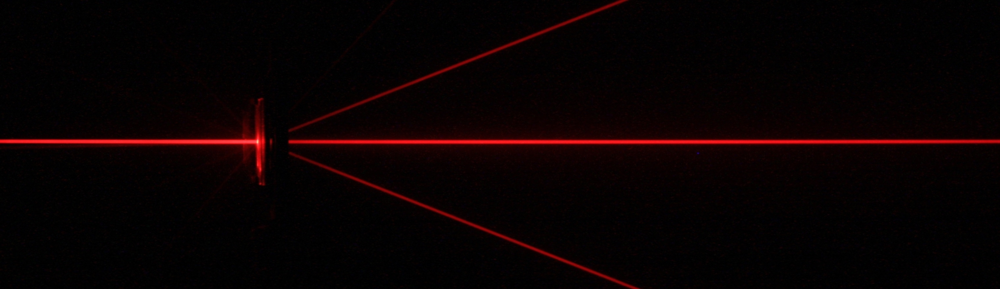
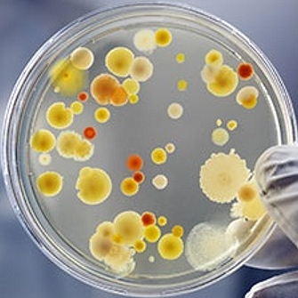
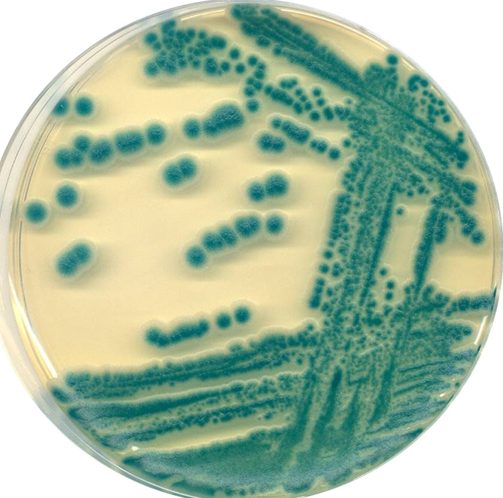
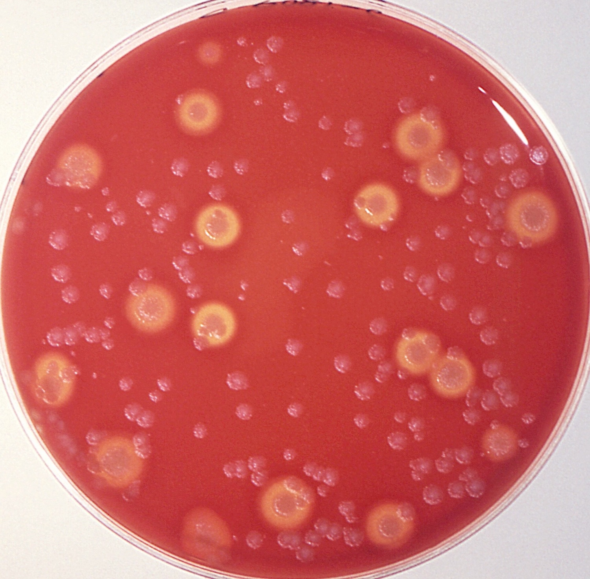

Victor Fournié, Ingénieur en physique et professeur d'électronique en systèmes numériques
Projet de thèse : BioPhysique

Mon attirance pour la thèse
- Utilité publique
- Résultats tangibles
- Aboutissement plus rapide que dans d'autres secteurs
- Pluridisciplinarité : Physique-Biologie
- Secteur en croissance
- L'esprit de thèse
- Travailler sur un projet personnel pendant 3 ans
- Acquérir des connaissances en biophysique

Mes points forts en biophysique
- Microfluidique
- Bio-impression 3D
- Ouverture pluridisciplinaire
- Bases en biologie
- Imagerie, Traitement de données, Materiaux, bancs d'essais, etc...
- Connaissances générales d'ingénieur physicien

Les applications attrayantes
- Liste non-exhaustive
- Sequencage ADN haute vitesse sur puce électronique
- Bio_impression 3D pour modèles cellulaires
- Impression 3D pour scaffolds puis post culture et greffes
- Lentilles de contact avec fonctions augmentées
- Attraper des cellules cancéreuses via des micro-épuisettes
- Capter et traiter les signaux nerveux pour animer des extensions robotiques
- Comparaison de puissance recue entre fantômes et simulations
- Traitement de cancer via nanoparticules et champs magnétique ou lasers
- Etude des forces cellulaires via AFM
- Etude de culture cellulaire multi-types via puces microfluidiques
- Détection bas cout multi-maladies via puces micoofluidiques
- Pinces optiques adaptées à la biologie
- Etc...